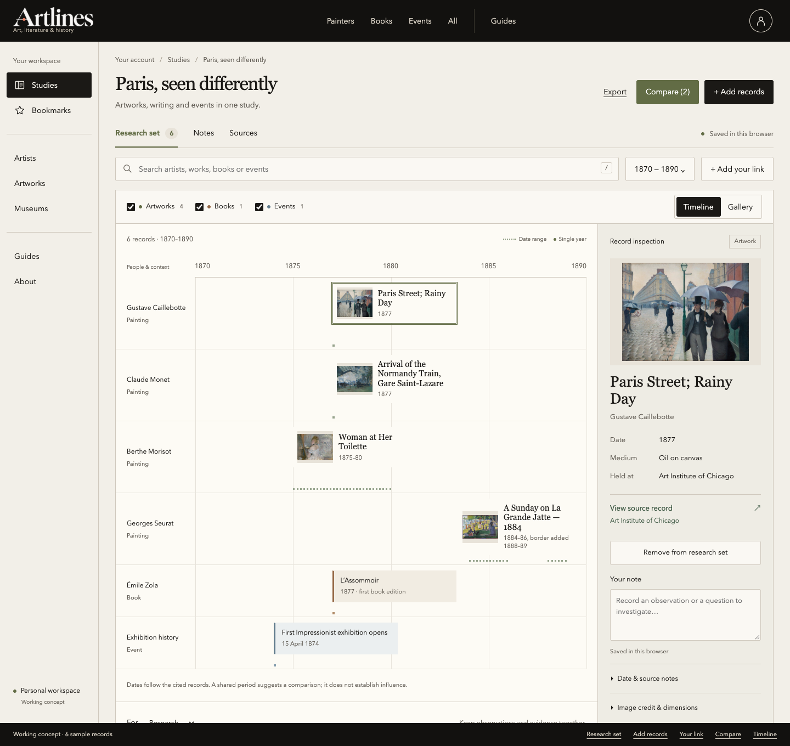
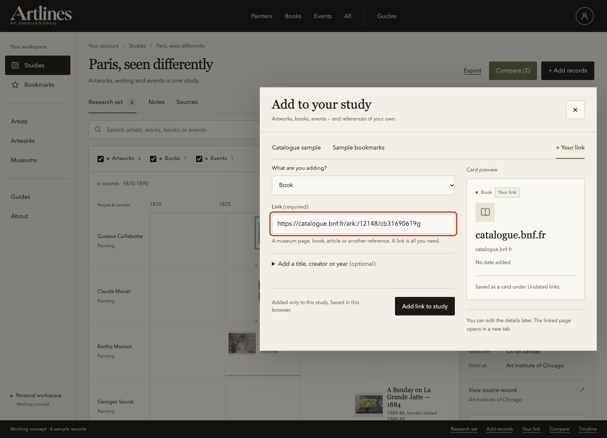
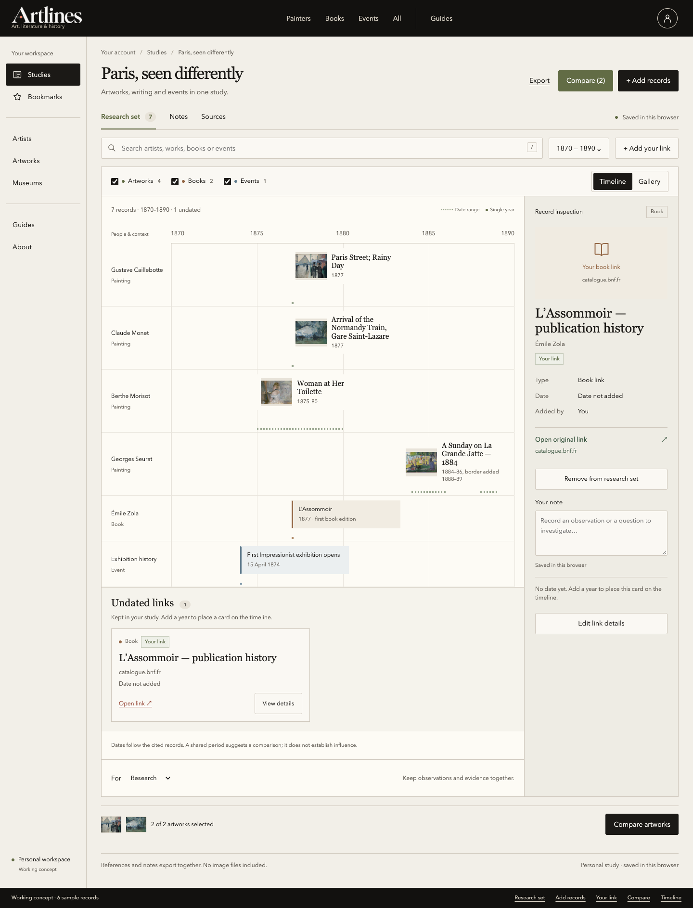
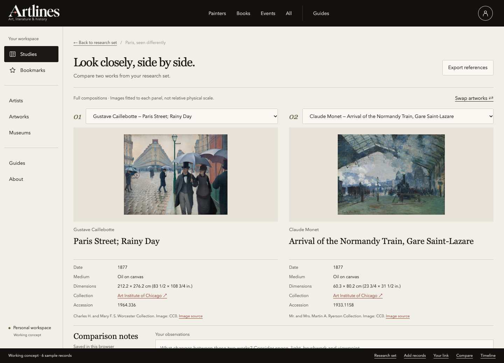

Art, writing and events. In one study.
Artlines account workspace · Revised mockups · 11 October 2026

The reference timeline
Artists and context on the left; artwork, book and event cards along the year axis.

Add your own link
A URL is enough. Add a title, creator or year only if you want to.


Your references belong in the study
Undated links stay visible as cards. Add a year later to place them on the timeline.

Keep artwork comparison
Choose two artworks independently. Books and events remain context in the study.


The same study, on a smaller screen.
A single-column gallery opens into full-width artwork details. Images retain their composition, titles wrap naturally, and sources stay beside the record.
Gallery is the initial mobile view. Timeline remains available inside its own scrolling canvas.
Working concept · 6 sample records, plus your own links. Artwork images come from the existing catalogue. Notes and selections are saved in this browser. These are browser captures of an isolated HTML preview, not screenshots of a production release. Design notes and scope.